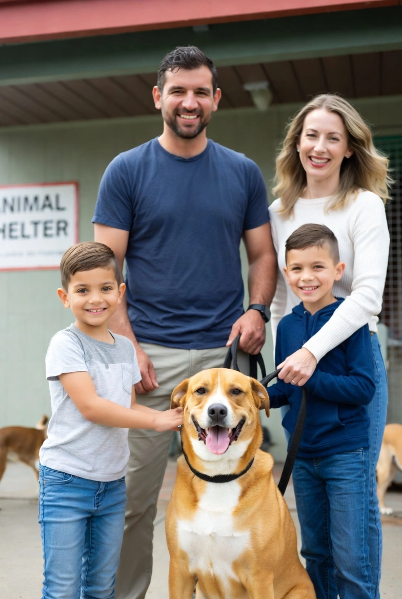
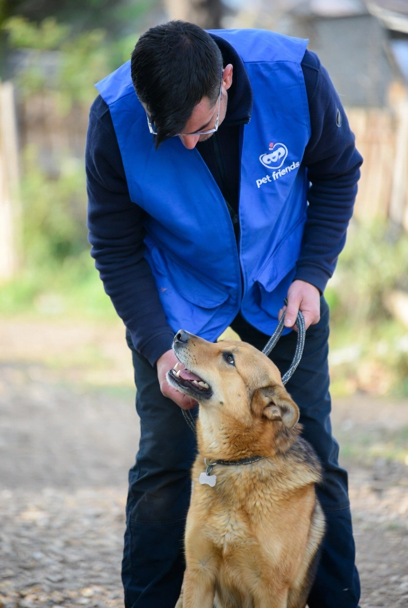

Soy adoptista
Busca y adopta mascotas que necesitan un hogar.
Crear CuentaSelecciona tu perfil

Busca y adopta mascotas que necesitan un hogar.
Crear Cuenta
Publica mascotas y ayúdalas a encontra un hogar.
Crear Cuenta